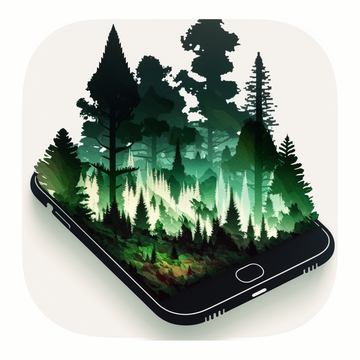

Forest Navigation · Maintenance Cuttings · Support
HooldusR is a forest navigation app. It draws a map layer derived from remote sensing data covering the whole territory of Estonia, highlighting stands that should be checked on the ground for maintenance cuttings.
You navigate to a highlighted stand by GPS, inspect it in person, and record what you actually found — without leaving the map.
Highlighted areas are coloured by the year the analysis was produced:
Correct — the stand does need a maintenance cutting, as the analysis indicated.
Incorrect — the analysis flagged this stand, but no cutting is needed.
Missing — a cutting is needed here, but the analysis did not flag it.
Location is the core of the app. The map follows your position as you walk to a highlighted stand, and every observation you save is recorded at the exact coordinates where you are standing.
Location is used only while the app is open. It is stored on your device and never sent to us.
Every observation is written to a database inside the app's own storage on your iPhone. Nothing is uploaded — there are no accounts, no analytics and no advertising.
You can export the whole survey as a CSV file whenever you like, and send it wherever you choose.
Three things to check. First, the layer covers the territory of Estonia only — outside Estonia the app works as a plain map, which is expected. Second, the tree icon in the top bar hides and shows the layer; tap it once to bring the layer back. Third, the layer is downloaded from a map server, so it needs a network connection the first time you view an area.
An observation needs a GPS fix, because it has to be recorded at a real position. Check that the coordinates in the black strip at the bottom of the screen are showing real numbers rather than 00.000000, and that location access is allowed in Settings → HooldusR.
Choose Save as *.csv from the ⋯ menu. The file is created in the app's Documents folder — reachable in the Files app under HooldusR — and handed straight to the iOS share sheet, so you can mail it, drop it in a cloud folder, or AirDrop it to a laptop.
Each export is timestamped, so a new one never overwrites an earlier one.
Yes. Open the ⋯ menu and turn on Show points to draw your saved observations on the map. Tap the marker you want to remove, then tap the blue detail button in its callout, and confirm.
Yes — the globe icon in the top bar switches between the standard map and satellite imagery. The coloured layer draws over both. Satellite view helps when compartment boundaries are hard to read on the ground.
Bug reports, feature requests, or questions about the data behind the map are all welcome. We aim to respond within a few business days.
Email Support